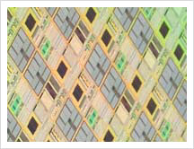
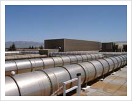
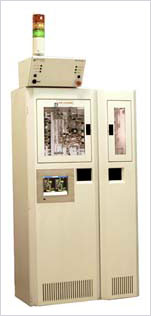

 | |
DST Controls has been providing control and monitoring systems to semiconductor manufacturers, and their equipment suppliers, since 1985. DST designed, prototyped, and manufactured the first mass-produced PLC/HMI-based gas cabinet controllers for the semiconductor industry. This was in direct response to customer requests for more flexibility in user-preferences such as pass-word protection, purge sequences, and life safety system connectivity.
DST has also provided fab clean-room facility control, process equipment control, networking and communications systems, life-safety systems, bulk gas delivery systems, and chemical delivery systems for semiconductor manufacturers such as NEC, National Semiconductor, Fujitsu, and Hyundai. Semiconductor OEMs such as Air Liquide, Kanto, Praxair, and MicroBar have also been happy DST Controls' customers.
DST remains fully cognizant of the premium that semiconductor manufacturers place on safety, fab up-time, and prompt project delivery. |
DST's semiconductor experience includes...
- Chemical Dispense: DST designed control systems for leading manufacturers of chemical dispense and track system equipment. Tasks included documenting equipment functions, PLC hardware evaluation, writing functional and technical specifications for PLC hardware and software, engineering, PLC & SCADA programming, and panel building.
- Bulk Gas Delivery: DST worked closely with a major specialty gas supplier and their customer to design and fabricate a redundant, PLC-based control system for in-fab delivery of bulk silane process gas. Tasks included control panel design, software engineering, programming, MMI screen development, complete system documentation, and start-up.
- Life Safety System: DST designed, fabricated, programmed, and started-up the campus wide, PC/PLC based network that comprises a major wafer manufacturer's Life-Safety System. Tasks included system design, hardware specification, control panel assembly, software development, programming, and start-up.
- Gas Panel Control: DST developed -- from concept to completion -- various gas panel control products for gas suppliers and wafer manufacturers. These were PLC-based, networkable, local control devices with user-friendly touch screen displays. Complex purge routines, fail-safe interlocks, ISO 9001 quality, and superb manuals and documentation were common denominators in each controller product.
- Wafer Handling: DST supplied programming, start-up and field service to a major mechanical systems integrator of wafer processing equipment. Tasks included coordinating multi-axis positioners, conveyor systems, radio frequency identification, and host computer communications.
- Tool Automation: DST integrated one of the earliest PLC-based control systems used in wafer fabrication. Tasks included vacuum control & monitoring, wafer transport, host communication, and supervisory computer.
- Process Test Fixture: DST developed control and monitoring system for plasma test chambers for manufacturing and etching silicon wafers. Used with multiple GEF 90-30 PLCs and HMI.
- Field Service Support: DST has provided sort-term and long-term on site support for major fabs in China, Texas, California, and Maine.
- Custom Communications: DST has developed-and integrated-numerous communications solutions (including custom driver development for OEMS) to include previously non-networkable equipment in SCADA and WAN/LAN systems within fab-wide environments.
| |  |
|